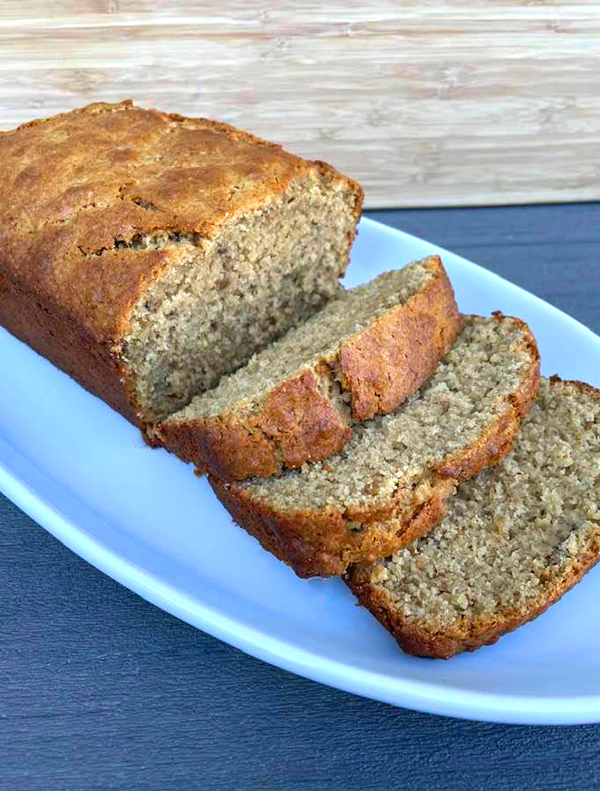

Gluten free banana bread

Description
Ever wanted banana bread but have too many friends who disagree with gluten?
Make gluten free banana bread, which is like regular banana bread but not.
Ingredients
- 4 small very ripe bananas, mashed
- 150g gluten free (GF) self-raising flour
- 100g GF oats
- 50g ground almonds
- 1 tsp GF baking powder
- 100g unsalted butter
- 2 large eggs
- 1 tsp cinnamon
- 90g dark brown sugar
- 90g caster sugar
- 1 tbsp icing sugar
Method
- Heat the oven to 180C/160C fan/gas 4 and line a 900g loaf tin with parchment paper
- Put all ingredients except the caster sugar and icing sugar into a large bowl and stir until smooth and combined
- Pour into the tin and sprinkle over the caster sugar
- Bake for 1hr - 1hr 15mins until a skewer comes out clean
- Dust with icing sugar and leave to cool